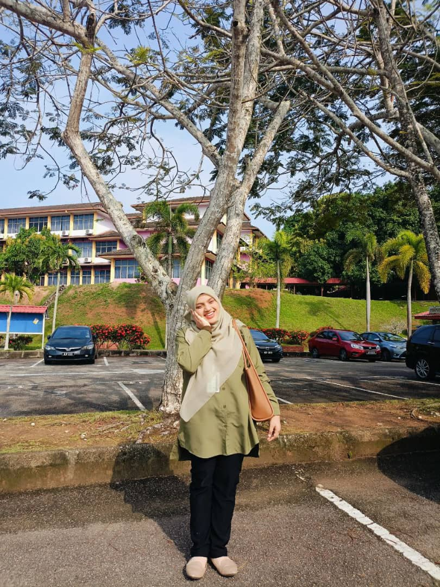
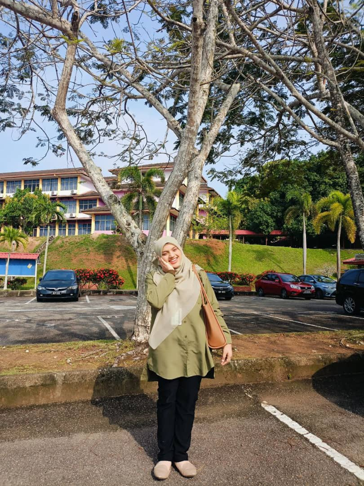

ABOUT ME
 

Hi My Name is Nur Fathin Sabrina. You can call me Sabrina. I am a student in the field of Information Management at the diploma level. Throughout my studies, I have learned a variety of skills, including data and records management, information analysis, and the use of technology to support organizational effectiveness. I aspire to build a career in the field of data analysis, where I can contribute to strategic decision-making based on accurate and relevant information. In addition, I am also actively involved in extracurricular activities and programs organized by the campus to improve soft skills such as leadership, communication, and team collaboration. I believe that effort, discipline, and continuous learning are the keys to achieving success.